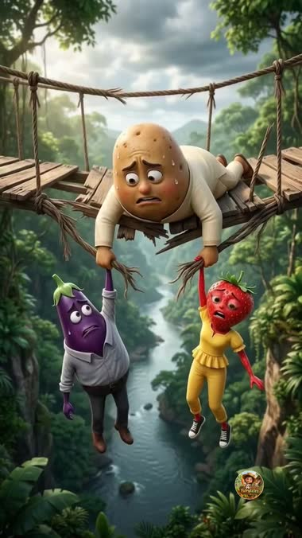
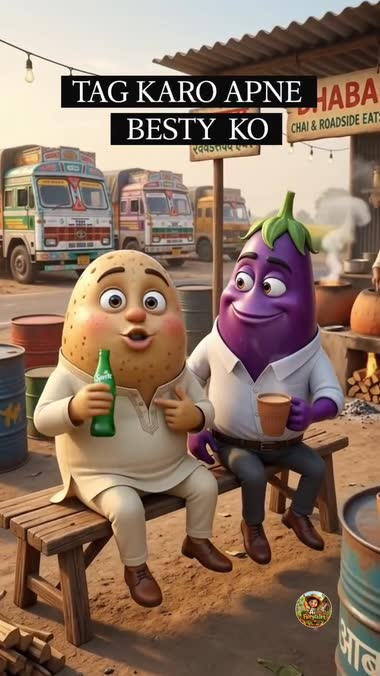
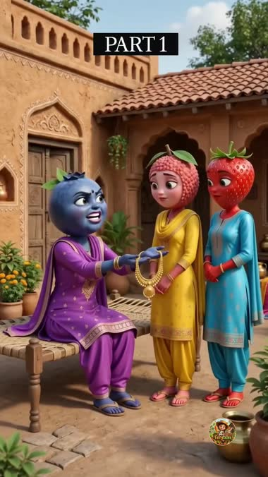
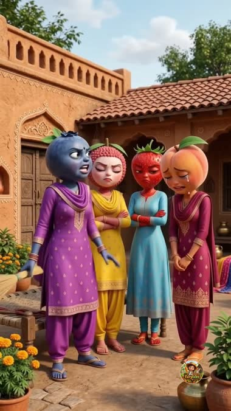
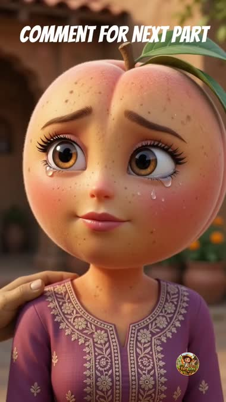
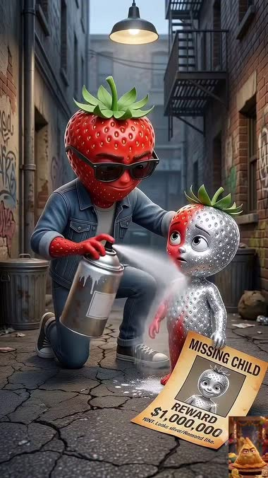
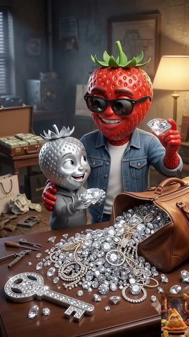
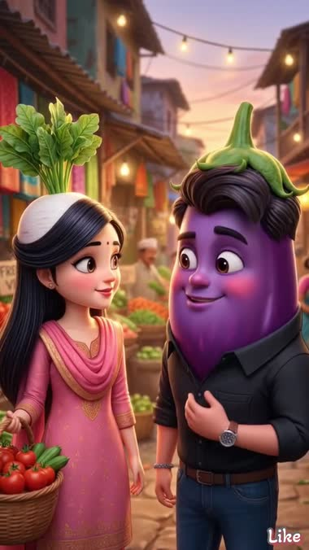
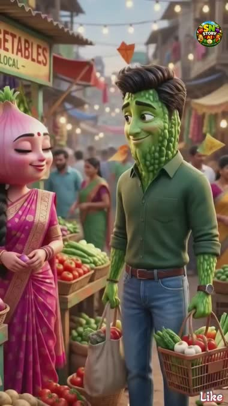
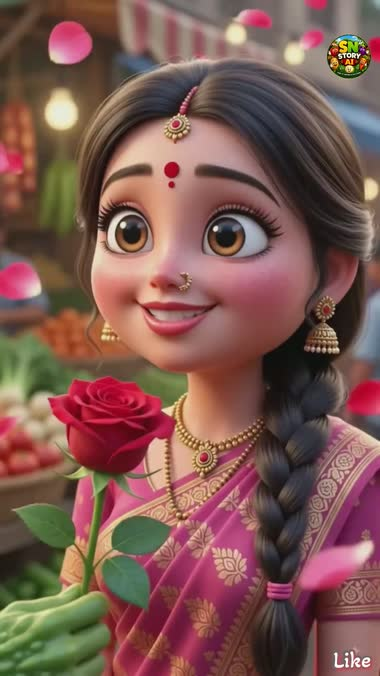

The measured shape
Every number here was measured off the files with ffmpeg and re-measured by a second pass. Nothing is estimated.
| # | Page | Story | Length | Shots | Avg shot | Hindi words | Speech | Ends on |
|---|---|---|---|---|---|---|---|---|
| v1 | Ai Fairytales | Dowry / saas–bahu | 63.4s | ~16 | 4.0s | 202 | 84% | Cliffhanger + “COMMENT FOR NEXT PART” |
| v2 | SN Story AI | Onion-seller romance | 38.9s | ~13 | 3.0s | 65 | 69% | Spoken moral, twice |
| v3 | (samosa logo) | Chrome-family heist | 84.0s | ~13 | 6.5s | 180 | 73% | Villains win. No moral. |
| v4 | unidentified | Baingan × Mooli love | 31.4s | 4 | 7.8s | 77 | 96% | Happy couple |
| v5 | Ai Fairytales | Bridge: friend or lover? | 30.9s | ~18 | 1.7s | 52 | 98% | “TAG KARO APNE BESTY KO” |
The nine rules that fall out
These are the patterns that hold across the set — not one-offs.
- No intro. Ever.Zero logo stings, zero title cards, zero establishing shots. Four of the five have a character talking by 0.4 seconds. The one that dawdles — v2, first word at 2.9s — is also the flattest video in the batch. Frame one is already the middle of the scene.
- Frame one is the conflict.v5 opens on a man dangling off a collapsed rope bridge holding two people by the hands. v3 opens on a villain spray-painting a child silver next to a “MISSING CHILD — REWARD $1,000,000” poster. You cannot scroll past either. The question the image asks is the hook — no narrator sets anything up.
- 31–84 seconds. Not ten minutes.Facebook removed the Reels length cap — length is not the constraint. They are choosing short. The long story still exists; they just ship it in parts (see §Serialisation).
- Dialogue-led, and it never stops.69–98% of runtime is speech, and not one of the five has a silence gap over 0.6 seconds. Music runs continuously underneath. There is no “breathe here” beat — dead air is treated as a scroll cue. This confirms the dialogue-led correction we already made for Story 12.
- Short lines, many per clip.Hindi runs at ~2.5 words/sec here. v4 packs ~19 words into one continuous 7.8-second take — that is 4–6 rapid lines of two-person back-and-forth, each 3–6 words, not one long speech. This corrects our own rule: the limit is ~15–20 words per 8s clip, and the line length ceiling is ~6 words, not 9.
- Cut speed follows emotion, not a template.Jeopardy cuts fast: v5 averages 1.7s/shot through the bridge sequence. Romance holds: v4 is four ~7.8s takes, no hard cuts at all — just dips to black. Same page can do both. Pick the rhythm per scene.
- One close-up carries the whole video.Every video has exactly one held, tear-streaked or wide-eyed face CU at its emotional peak — the crying peach at 12s and again at 60s in v1; the strawberry girl weeping as she is about to be dropped at 6s in v5. That frame is also the thumbnail frame. Budget one hero CU per video and put it at the peak.
- The ending is a CTA, not a moral.Only one of five states a moral (v2, “सच्चा प्यार हमेशा जीतता है”, said twice). The other four end on a cliffhanger, a comment-bait, a tag-bait, or nothing. Our own FB page bio currently promises “har kahani ek moral ke saath khatam hoti hai.” The winners are not doing that.
- Villains are allowed to win.v3 runs 84 seconds and the con artists get away with everything — they steal the child, the reward, and the diamonds, and the last shot is them gloating over the pile while the victims shop, oblivious. No punishment, no karma, no moral. It is the longest video in the set. Moral closure is optional; a reaction is not.
Video by video
Hindi is transcribed by ASR and is approximate on spelling — the meaning is right, the exact spelling may not be.
v5 — “Who do you save?” engagement bait


| Time | What happens | Emotion |
|---|---|---|
| 0–10s | Aloo hangs off a smashed rope bridge over a gorge, gripping Baingan (childhood friend) in one hand and Strawberry (his love) in the other. Both scream to be saved. The rope is snapping. “अब मैं किसे बचाऊँ?”“Now who do I save?” | Panic, impossible choice |
| 10–13s | He lets go of the girl. She falls. Splash. Cut. | Shock — he chose the friend |
| 15–24s | Hard tonal cut. Aloo and Baingan roaring with laughter on a motorbike through a market, then at a dhaba with drinks. No grief, no aftermath, no mention of her. | Jarring joy |
| 24.7–30.6s | Overlay: TAG KARO APNE BESTY KO. VO: “दोस्तो, टैग करो अपने उस दोस्त को जिसके लिए आप कुछ भी कर सकते हैं। जल्दी करो, कॉमेंट्स में नीचे।”“Tag that friend you'd do anything for. Quick — down in the comments.” | Direct instruction |
The whole video exists to earn the last six seconds. The dilemma is engineered to be argued about — half the comments will be “friendship 🔥”, half “he's a monster”, and both are comments. No moral. No consequence. The emotional logic is deliberately indefensible, and that is the point: an indefensible choice is a comment engine. Note the structure — 20 seconds of fast-cut jeopardy, then two long, calm takes to land the CTA.
v1 — Dowry / saas–bahu, “PART 1” serialised



| Time | What happens | Emotion |
|---|---|---|
| 0–7s | “PART 1” in a black box, top-centre. The Jamun-headed saas hands gold to her two rich bahus: “ये लो मेरी रानी बहुओं… कार से लेकर सोना तक, मेरा सर ऊँचा कर दिया।”“Take it, my queen daughters-in-law — car to gold, they raised my head high.” | Boasting, favouritism |
| 7–19s | She turns on the third — the poor Peach bahu: her father “एक फूटी कौड़ी नहीं लाया”. Held CU: Peach in tears, hands folded. | Humiliation → peak CU |
| 20–30s | Peach defends her father — he spent his life's savings. Saas: “ज़ुबान मत लड़ा… आज से घर का सारा काम तू ही करेगी।”“Don't answer back. From today you do all the housework.” | Injustice hardening |
| 31–44s | The Aloo husband intervenes: “दहेज लेना और देना दोनों पाप है।”“Taking and giving dowry are both sins.” Saas threatens to throw Peach out if the rest of the dowry doesn't arrive. | Defiance vs threat |
| 44–57s | Peach alone at the hand pump scrubbing a mountain of dishes, crying. The rich bahus stroll past and mock her. | Grinding humiliation |
| 57–63.4s | Husband sits with her, promises he's with her, “अम्मी को इस गलती का एक दिन ज़रूर अफ़सोस होगा।” Overlay: COMMENT FOR NEXT PART. Story is unresolved. | Hope + cliffhanger |
This is our exact genre — poor-vs-rich, dhokha, saas–bahu — chopped into a 63-second Part 1 that resolves nothing. The moral line is spoken mid-video as a character's dialogue, not as a closing narration. The family is written Muslim (अम्मी, ख़ुदा, बेगम), which is a deliberate audience choice we have never made.
v3 — Chrome-family heist villains win


| Time | What happens | Emotion |
|---|---|---|
| 0–11s | A Strawberry-headed con man spray-paints a Strawberry boy chrome silver so he'll pass as the missing son of a rich all-chrome family. He runs through the city with the reward poster. “अब देखना हम कैसे अमीर बनते हैं।”“Now watch how we get rich.” | Greed, scheming |
| 12–26s | Mansion. He hands over the “found” child, collects a briefcase of cash. The chrome parents weep with joy and embrace the fake son: “मेरा बेटा… आख़िर तुम मिल गए।” | False reunion — dramatic irony |
| 27–36s | Parents leave, telling the boy to stay inside and take care. “अलविदा मम्मी पापा… जल्दी वापस आना।” | Trust being exploited |
| 37–57s | The boy produces a diamond key, opens the vault, loads jewels into a bag, escapes through night streets leaving a trail of dropped diamonds. | Tense theft |
| 58–75s | Parents in the limo, tender about their son. Cut: the boy delivers the loot. Villain gloats over a mountain of diamonds. “शाबाश बेटा।” | Cold triumph |
| 76–84s | The chrome parents shopping with Dior bags, happy, oblivious. “बेटा, तुम कहाँ हो?” End. | Dread, no resolution |
Two things to steal here. First, it fuses our genre with the chrome/liquid-metal “silver people” AI trend — a visual gimmick doing real work: the whole plot (paint a kid silver to fake him into a silver family) is only possible because of the trend. Second, it is the longest video in the set and it has no moral and no justice. Greed → con → the con works. That is the whole story.
v4 — Baingan × Mooli long takes

| Time | What happens |
|---|---|
| 0–8s | Market. Baingan sees Mooli. “अरे… ये कौन है? इतनी प्यारी तो मैंने कभी नहीं देखी।” First word at 0.0s. |
| 8–16s | Names exchanged, crowd applauds as they walk. “आज से हम दोस्त।” |
| 16–24s | He kneels with a rose. “तुम मेरी ज़िंदगी की साथी बनोगी?” Petal-fall CU on her face. |
| 24–31s | She accepts. They walk off holding hands at sunset. No moral, just warmth. |
The most technically useful video in the batch. Four takes of ~7.8s — i.e. four raw 8-second AI clips, used whole, joined by dips to black. Zero hard cuts. And each one carries ~19 Hindi words of two-person back-and-forth. This is a real, working shape for an 8s clip, and it is denser than the rule we wrote for ourselves.
v2 — Onion-seller romance has a moral


| Time | What happens |
|---|---|
| 0–3s | Market wide. First word only at 2.93s — the slowest open in the set. |
| 3–16s | “एक किलो प्याज़ देना।” / “और कुछ चाहिए?” / “हाँ, आपकी एक मुस्कान भी।”“A kilo of onions.” / “Anything else?” / “Yes — your smile too.” She notices he comes every day. |
| 16–27s | He confesses. Rose. “अब ये दुकान हमारी ख़ुशियों की दुकान होगी… और तुम मेरी पूरी दुनिया।” |
| 27–38.9s | Moral, spoken twice: “सच्चा प्यार हमेशा जीतता है।”“True love always wins.” Festival lights. |
The weakest of the five and the only one with a stated moral — those two facts sitting together is the uncomfortable part. It also has the slowest open (2.9s) and the lowest speech density (69%). If any video in this set is a cautionary example rather than a model, it is this one. (Caveat: I have no view counts — see Open questions.)
The art style — we already picked right, with one correction
All five run the same construction. It is the Story-12 style, not the legacy cute full-veg style.
- Cast size: 2–4 characters. Never more. v4 works with two.
- Wardrobe: always real Indian clothing — salwar/saree/kurta on women, shirt+jeans or kurta on men. The clothes carry the class signal (rich = gold + silk; poor = plain cotton).
- Backgrounds: one location per act, heavily dressed — village haveli courtyard, sabzi mandi, dhaba, mansion. Never empty.
- The gimmick layer: v3 stacks the chrome/silver-people trend on top of the veg-head style. Two trends in one video. Worth trying.
The engine: serialisation + comment bait
This is the single biggest thing in the teardown, and it resolves the tension between “Facebook wants short” and “we have ten-minute stories.”
Why this is the right machine, not just a trick:
- It converts our existing asset. A 10–11 minute Story becomes 8–10 Facebook parts — we do not need new scripts to start, we need a different edit.
- Comments are the ask, and comments are the cheapest ranking signal to move. “Comment for next part” is a far lower-friction ask than a like or a follow, and it is self-justifying: the viewer wants the next part.
- It builds the only thing a cold page lacks — return viewers. Someone who comments on Part 3 comes back for Part 4.
- It fixes our cold-start problem (3–4 uploads in 2 months). One story = 8–10 posts. Cadence solves itself.
What this changes in our build
- Line length ceiling: 9 words → ~6 words. Was: “no dialogue line over 9 Hindi words, max 2 lines per clip, ≤16 words per clip.” Now: lines of 3–6 words, 4–6 of them per 8s clip, ~15–20 words per clip — a real two-person exchange inside one continuous take. Measured off v4.
- The 8s-vs-10s question is answered — it's 8s. Was: open risk in CLAUDE.md; Shilpi chose 10s timing; we flagged that line 2 at [7-10s] might get cut. Now: v4 is four clean ~7.8s takes. The field is shipping 8-second clips. This still needs Shilpi's render test to confirm for our pipeline, but the competitive evidence says 8s.
- Add human hair + human facial features to the veg head. Was: “whose entire head IS a single real X”, nothing else. Now: veg forms the skull/crown; human hair, human eyes/mouth, human skin tone on the cheeks. Reads as a character rather than a mask.
- Kill the “every story ends with a moral” promise. Was: our FB page bio says “Har kahani ek moral ke saath khatam hoti hai.” Now: 4 of 5 winners have no moral. The ending's job is a reaction — cliffhanger, comment, tag, or an unpunished villain. Bio needs rewriting.
- Cut the intro to zero and open on the wound. First frame = the conflict already in progress. First spoken word before 0.5s. No establishing shot, no title card, no logo sting.
- Never leave a silence gap. Continuous music bed under 100% of runtime; no gap over 0.6s. Speech should cover 70%+ of the video.
- Cover the bottom-right corner on every export. Our animated badge already exists for this. Two of the five competitors are covering a generator watermark badly and getting away with it — but Meta names visible third-party watermarks as an unoriginal-content trigger carrying a 90-day demonetisation. Cover it cleanly, every time.
Open — I need these before we commit
- Which page is which, and how much traction? The files are stripped of all metadata. I can see three distinct pages but I have no page URLs, no view counts, no like/comment counts, no post dates. “Gaining good traction” is doing a lot of work here — v2 could be a 400-view dud for all I can measure. Send the post links (or the page names + a screenshot of the view counts) and I will re-rank this whole teardown by what actually performed.
- Is the “COMMENT FOR NEXT PART” page actually winning, or is it just the loudest? This is the one finding I want to build our whole FB format on, and it is the one I can least verify from the file alone.
- Do we go Muslim-family framing (v1: अम्मी / ख़ुदा / बेगम)? It is a deliberate, large-audience choice and we have never made it. Your call — I won't pick a religious frame for the brand unilaterally.
- Do we serialise Story 10 or 12 as the first FB run, or write short-form-native scripts from scratch? Serialising is far cheaper — we already have the renders.